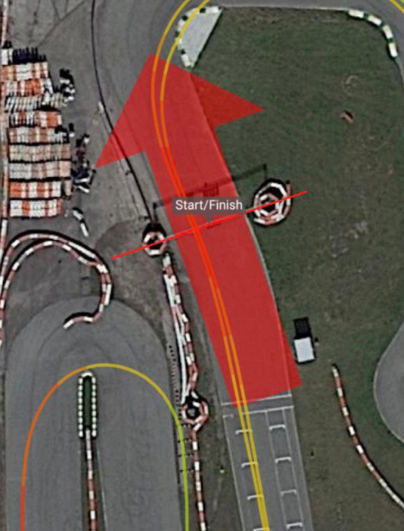
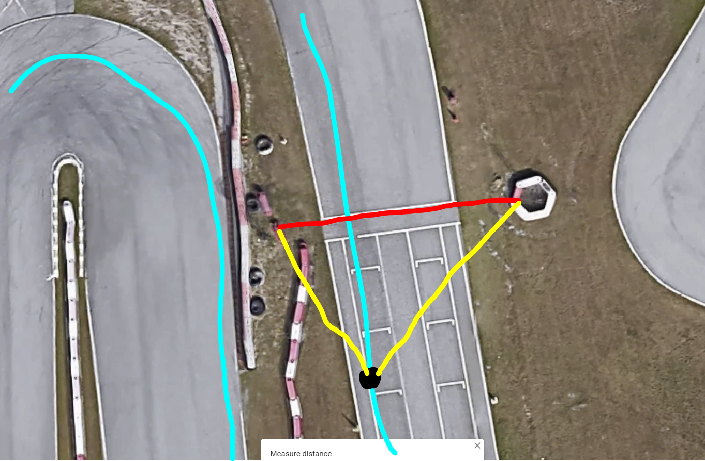
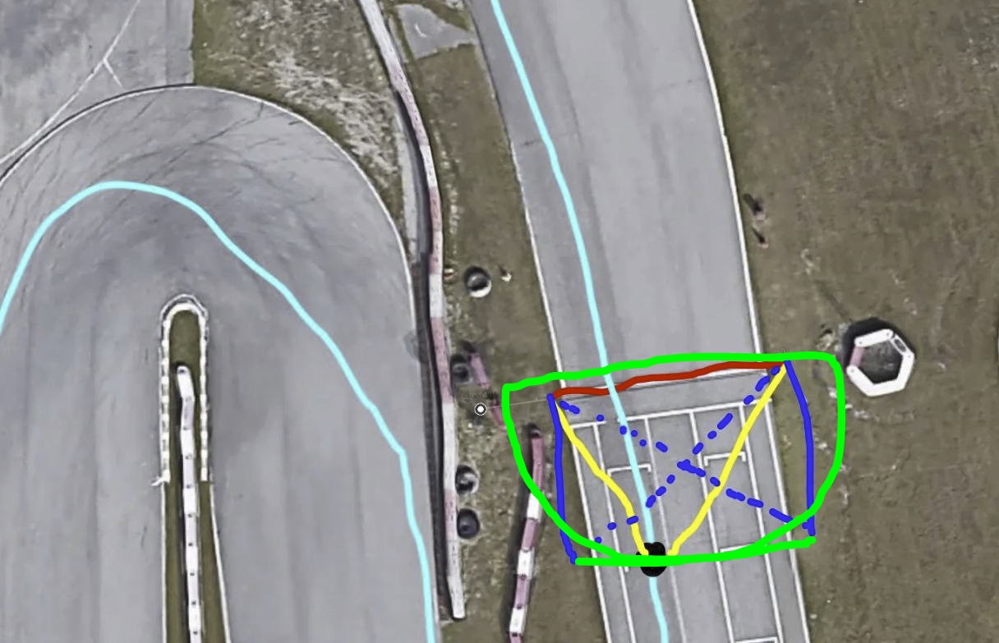
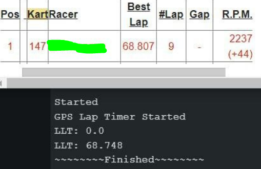

- Generated by
 1.9.8
1.9.8
|
DovesLapTimer 4.0.0
GPS-based lap timing Arduino library — go-karts to race cars
|
This started life as a blogpost begging someone smarter than me to read it, call me an idiot, and hand me a better solution. The funny part: nobody had to. The algorithm below survived contact with real tracks — validated against MyLaps magnetic-loop timing and pinned in regression tests — so this is no longer a plea for help. It's a writeup of how crossing detection actually works, and why every "obvious" approach falls apart.
Here's the quick rundown:
The largest problem in this library isn't interpolating the crossing time — it's detecting when we're crossing in the first place. GPS isn't real-time; it samples anywhere from 1–50Hz. So we need a detection system that reliably notices we're approaching the crossing lines between samples.
>Oh, just check the distance from the driver to the line! Super simple.
You'd think, right? The problem shows up on more complicated tracks — and luckily my home track is one of them. On the long configuration, turn 10 comes REALLY close to the crossing line. There are even two painted "lines" near start/finish — I assume one is a staging line and one is the actual magnetic loop. Configure your timer for the wrong one and the whole naive distance check throws fits.
>What about checking the driver's heading?
Then you also have to track forward/reverse direction, AND GPS heading without a compass is wildly inaccurate. Reading data off a much more expensive race computer, I watched the car randomly "spin" in the recordings. Not an option.
So add a compass?
No.
Draw a box around the finish line?
Absolutely not. I just want crossing-lines to be two GPS coordinates.
So here's the problem. The start/finish line below is marked properly for this track, but a simple "distance to line" check still falls apart if you get pushed to the outside. And this is perfect-conditions data.

This was my first wacky idea:
crossingThresholdMeters of the line, calculate the type of triangle formed (yellow)The problem? Again: GPS isn't real-time. There's a specific distance from the line you have to be at before the triangle goes too obtuse, and that window is tiny. In one dataset it worked; in another it stopped working on the second lap. There's a razor-thin band where this "works," and you can't count on landing a GPS sample inside it.

This is the current solution. It looks silly, but it holds up:
crossingThresholdMeters (blue) and calculate the hypotenuse of a right triangle (blue dotted line)It works with only 2 GPS data points, and it works in reverse with no changes (though your own code may still want to note direction for logging purposes).

This is the part the original blogpost was waiting on. The data came in, and the algorithm held up.
Against a real MyLaps magnetic loop at Orlando Kart Center, DovesLapTimer's interpolated lap times track the ground-truth loop times closely — close enough to call the library "on par with commercial solutions" without flinching:

That comparison isn't a one-off eyeball check anymore, either. It's locked into CI:
GeoMath, direction detection, course detection, and a full synthetic-track pass over the timing pipeline.So the hypotenuse trick isn't "a viable solution until I get more feedback" anymore — it's the proven core of the library, with the test suite to keep it honest.
I built a tester so you can see the results for yourself. It stores NMEA GPS logs and replays them with no GPS hardware required (just mind your chip's RAM limits). Two datasets for the short track, one for the long track, and more are wired into the replay regression suite.